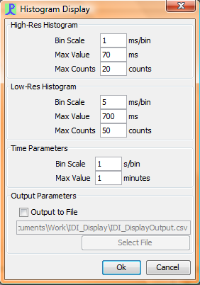

The click detector display contains four main sub windows, although it is possible to have more than one instance of the main bearing / time display if desired. Two optional displays, IDI Histogram and Wigner Plot, are also available by selecting Click Display>Add Display in the toolbar menu.
Right clicking on the bearing / time display brings up a pop-up menu from which you can configure the display.

Each detected click is shown as a circle or ellipse on the scrolling display. The display options, available by right clicking on the display, can be used to select the parameter to display on the vertical axis: bearing, amplitude or inter-click-interval. Note that inter-click intervals will only be shown in the automatic click train identifier is running.
The example shows 20s of data with three sperm whales currently slightly ahead of the hydrophone array.
The duration of the display may be adjusted using the right hand (vertical) slide bar.
The horizontal slide bar is disabled during data acquisition.
Click trains identified by eye may be tracked manually.
To track manually, press the default mouse button anywhere on the display. While the mouse is held down, the display will stop scrolling allowing you to position the mouse above a particular click. Release the mouse over a click and that click will be 'tracked'.
Tracked clicks may be overlaid on the map display and also on radar type displays.
If the same operation is performed using the right mouse button, then a pop-up menu appears and the operator is asked to assign clicks to numbered groups. Clicks within the same tracking group are assumed to be from the same source. PAMGUARD then uses a least squares fit to estimate the position of the source based on the most likely crossing point of the bearing lines for each tracked group.
If a location has been successfully calculated, it can be displayed on the map and radar displays.
If the automatic click train identifier is running, clicks will be coloured when they are assigned to a click train. As with manual tracking, PAMGUARD will use a least squares fit to estimate the position of the source based on the most likely crossing point of the bearing lines.
As with manual tracking, automatic click trains are displayed on the map, either as bering lines (when no position has been calculated) or as a bearing line and point if a position has been calculated.
The waveform of each click is displayed as it is detected.
The power spectrum of each click is displayed as it is detected.
The trigger window shows the amplitude of the signal on each channel as a decaying histogram. The vertical red line represents the trigger threshold set in the detection parameters dialog (cross reference).
Level meters for each channel are also shown on the right hand side of the trigger window.
Display options for windows on the tab panel are accessed from the Click Display>Display Settings menu or by right clicking on the display.

The axis panel (shown above) shows the same basic three options for the vertical axis that can be selected from the pop-up menu. It also allows you to select limits for the vertical axis when ICI or Amplitude are displayed. The number of horizontal grid lines may also be set (note that this is stored separately for the three types of vertical axis).

The size at which each click is displayed can also be set. Clicks sizes will scale between the lower and upper bounds based on their amplitude and duration.

If the click classifier is running it is possible to select which types of clicks get displayed.
The IDI (Inter-Detection Interval) Histogram Display provides a visual interpretation of the inter-detection interval on two different scales. The display uses a horizontal split-pane to present the data in both a high-resolution (left pane) and low-resolution (right pane) format. The relative proportion of the panes can be changed by dragging the center divider to the right or to the left.
The vertical axis is the elapsed time since the acoustic data collection was started, and is common to the two panes. The units are minutes. Each row in a pane represents a histogram of data accumulated over the course of a certain time period (the time bin), as defined by the IDI Display parameters (see below). In the image above, the time bin is 1 second. This means a histogram is generated every second from the IDI data that has been compiled over the last second, and displayed on the screen.
Each pane has it's own horizontal axis. Each column represents a range of IDI values, where the size of the range is defined by the IDI Display parameters (see below). In the image above, the IDI bin size is 1 ms for the high-resolution pane and 5 ms for the low-resolution pane. The highest value bin is 70 ms for the high-resolution pane and 700 ms for the low-resolution pane. Taking the low-resolution pane as an example, the first bin would count the number of inter-dection invertvals that fall between 1 ms and 5 ms, the second bin would count the number of inter-dection intervals that fall between 6 ms and 10 ms, etc.
Each row/column combination, therefore, is a cell that represents the number of inter-detection intervals counted in a specific IDI range over a specific time period. The color of each cell represents the magnitude of that count, with black indicating 0 and red indicating a maximum value as defined by the IDI Display parameters (see below). In the image above, the maximum counts in the high-resolution pane is 20 and the maximum counts in the low-resolution pane is 50.
When a click is detected, the inter-detection interval is calculated as the elapsed time since the previous click detection (in milliseconds). The IDI bin with a range spanning that data point is determined, and the count within that bin is incremented by one. When the time bin has elapsed, the counts in each IDI bin are converted to a color and displayed on the screen as a new row at the bottom of the pane. Each previous row is moved up by 1 to make room. The row at the top of the pane is discarded.
When repositioning/tiling the window or resizing the split panes, the display may on occasion not update properly. In such a circumstance, simply adjust the size of the window slightly in order to force a redraw.

The IDI-Display Parameters Dialog can be accessed by right-clicking on the display window and selecting Plot Options. 3 parameters can be specified for both the high-resolution and low-resolution histograms:
Bin Scale: the size of each bin in the horizontal scale, in milliseconds
Max Value: the value of the highest bin in the scale, in milliseconds. In the above image for the low-resolution histogram, a bin size of 5 ms and a maximum value of 700 ms means there are (700/5=) 140 bins with ranges 1-5ms, 6-10ms, 11-15ms ... 691-695ms, 696-700ms.
Max Counts: the highest number of counts in a bin, corresponding to the color red
The two time parameters are:
Bin Scale: the size of each time bin over which the histogram data is compiled, in seconds
Max Value: the maximum amount of time shown on the chart, in minutes. In the above image, 1 minute of data with 1 second bins means a maximum of 60 histograms displayed at a time.
The histogram data can also be captured in a csv file, the name and location of which is specifed by the user. The first column in each row is the time of the click detection. Each column thereafter contains the counts found in a histogram bin - first the bins in the high-resolution histogram, followed by the bins in the low-resolution histogram. The values in the header row represent the upper limit of the bins (ie. for bin 1-5ms the header displays a 5, for bin 6-10ms the header displays a 10, etc).
The user should use caution when saving data, as the process is processor-intensive and will slow down other program functions.
Previous: Click Detector Displays
Next: Click Detector Side Panel